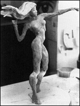
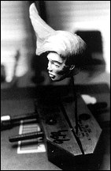
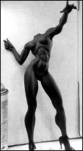
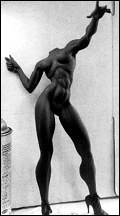
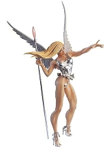

For this article, I am going to sculpt a sexy angel. First of all, I should mention that I prefer working 1/5th scale rather than l/6th. I feel the increase in size makes for a more dramatic aesthetic statement and is a superior value for the customer [and oh yeah, it has the added benefit for me of being EASIER to sculpt). Note also that I have designed this piece without a base, so that it is free- standing (using the staff to support the backweight of the wings). This requires a bit more "designing" effort but the "freestanding" decision is important to me. I personally prefer thinking of figurative kits as actual miniature people in my room. Without bases cemented to their feet, they seem more "alive" and free to walk around on my furniture.
 To start, you need to get your reference material
together for your sculpture. This angel character
is original, so I have to start from scratch. I'll go
anywhere for reference. Believe it or not, I had my
wife shoot Polaroids of me in this pose in my underwear.
From these Polaroids, I do drawings, exaggerating
[and of course, feminizing) the pose for effect.
I'm looking for "drama" and energy, not necessarily
realism. (who needs a sculpture of Mike James in
his underwear?) I use photographs for faces, sometimes
ripped out of magazines [for my angel I'm
downloading from the Internet a picture of Alicia
Silverstone's face from "Clueless" poster. I use
anatomy books for musculature.
To start, you need to get your reference material
together for your sculpture. This angel character
is original, so I have to start from scratch. I'll go
anywhere for reference. Believe it or not, I had my
wife shoot Polaroids of me in this pose in my underwear.
From these Polaroids, I do drawings, exaggerating
[and of course, feminizing) the pose for effect.
I'm looking for "drama" and energy, not necessarily
realism. (who needs a sculpture of Mike James in
his underwear?) I use photographs for faces, sometimes
ripped out of magazines [for my angel I'm
downloading from the Internet a picture of Alicia
Silverstone's face from "Clueless" poster. I use
anatomy books for musculature.
Before you begin you will also need some rudimentary sculpting tools. Spoons, butter knives, nails, screwdrivers, and toothbrushes will all work. Wood tools for working clay sculpture are good. A flexible metal scraper is handy. Dental tools for serious detail, but I have sculpted with nothing more than my fingers and an X-acto knife
 The sculpting material most commonly used by figure
modelers (and that I use) is Sculpey or better yet,
Super Sculpey (Polyform Products co. P.O. Box 2119,
Schiller Park, IL 60176 708-678-4836). This is put on
a wire "armature" or skeleton. I'm using wire that is
3/16th inch in diameter for doing this figure that is
about 14 inches tall. Drilling holes into a piece of wood, I
push the "leg" wires in to them, and then I bend them as
necessary and look at it from all angles to see that the
form matches my drawings. Twist the
wires around each other to form the legs, torso, arms,
and a small projection for the head. Then wrap the
3/1 6th" wire with a much thinner wire to give the sur-
face a tooth" that the Super Sculpey can stick to.
The sculpting material most commonly used by figure
modelers (and that I use) is Sculpey or better yet,
Super Sculpey (Polyform Products co. P.O. Box 2119,
Schiller Park, IL 60176 708-678-4836). This is put on
a wire "armature" or skeleton. I'm using wire that is
3/16th inch in diameter for doing this figure that is
about 14 inches tall. Drilling holes into a piece of wood, I
push the "leg" wires in to them, and then I bend them as
necessary and look at it from all angles to see that the
form matches my drawings. Twist the
wires around each other to form the legs, torso, arms,
and a small projection for the head. Then wrap the
3/1 6th" wire with a much thinner wire to give the sur-
face a tooth" that the Super Sculpey can stick to.
After the wire armature is complete, apply the Super Sculpey, squishing it all around the wire. Pack about a 1/4" of Super Sculpey around the legs, torso, and the head. Smaller amounts on the arms. Don't build it up too thick, it should still look skeletal. You begin to see a skinny figure forming and may want to make minor posing adjustments. Look at it carefully and think ahead to where the meat on these bones is going to lie.
Once you are satisfied with your pose, put the sculpture in the oven and bake at 225 degrees for 15 minutes for every 1/4" of thickness. When you take it out of the oven it will be hot. I facilitate cooling by immersing the piece in a sink of cold water. Once cooled, your piece is rock steady.

NOW, you can apply more Super Sculpey. You are
ready to flesh out some musculature and get appropriate
weights. I spend about 2 hours trying to
get the weights approximately right. I am not trying to
do a lot of detail, I'm just roughing in everything to the
proper mass. From this point, many sculptors continue
to work with Sculpey all the way to the detailed stage.
Personally, I find that unbaked Super Sculpey in large
amounts is too difficult to handle. It is almost inevitable
that as you work on one area, you will accidentally
touch a previously finished area, obliterating hours of
work. In addition, Super Sculpey is a poor
hard-carving medium.
 I prefer working with a combination of materials in
both an additive and a subtractive mode. Sometimes
adding soft material, sometimes carving hard material
When I am 100% satisfied with the pose and the sculpture
is massed in, I cut up the piece and
make a quickie cast using Vagabond's Odorless White
Resin (Vagabond Corporation, (760) 782-3136).
I prefer working with a combination of materials in
both an additive and a subtractive mode. Sometimes
adding soft material, sometimes carving hard material
When I am 100% satisfied with the pose and the sculpture
is massed in, I cut up the piece and
make a quickie cast using Vagabond's Odorless White
Resin (Vagabond Corporation, (760) 782-3136).
This casting process takes about a day, but once cast in resin, your sculpture is "invincibly" strong and can take any abuse. I first work the parts individually because I can get at all the hard-to-get-at places. I carve with an absolute MUST tool [Thank me later], a Dremel Moto Tool [Approx. $100, Dremel (414) 554-1390). It is a like a miniature router with variable speeds that you hold like a fat pencil. It has numerous bits that are quickly interchangeable for grinding, sanding, sculpting and drilling. It carves either hard resin material, or hard Sculpey like BUTTER! [But pay con- stant attention, or you may slip and accidentally grind off a lovingly-crafted finger. Grrr!]
Once the anatomy of each part is sculpted to satisfaction, I glue them back together and look again at the entire figure. This is exciting, to see your kit starting to look real. Even at this stage, I inevitably make major adjustments. I use "Bondo" on the resin, a common brand of automotive body putty (Bondo (800) 421-2663). Bondo is great because it is inexpensive [a GALLON for 15 bucks!). It sets up quick and tools easily, especially if worked within the first 20 minutes after setting. It can also hold great amounts of detail.


Now, my sculpture is beginning to take real form. Note that I have not yet added clothing. It is a good technique to sculpt a nude figure first and add the clothing later. That way, however subtle you wish, (granted, in the case of this angel, not very) the anatomy is discernable underneath the clothing. This gives realness and depth to your piece. Also note that, so far the wings are just thin roughed shapes. They will be done later.
 When designing a female figure wearing high heels,
something I do is replace the resin heels with finishing
nails. That way, they are very strong throughout
the abuse of the casting process. It only takes
about 10 or 15 minutes to do. Just break off the
resin spike and drill into the heel. Glue the nail into
the drilled hole to correct depth.
When designing a female figure wearing high heels,
something I do is replace the resin heels with finishing
nails. That way, they are very strong throughout
the abuse of the casting process. It only takes
about 10 or 15 minutes to do. Just break off the
resin spike and drill into the heel. Glue the nail into
the drilled hole to correct depth.

Doing the head and face requires a whole new level
of sculpting mentality. I decapitate my figure (excuse
the gross terminology) and work on this single part
as a piece in itself. There are certain mind games
that you have to play while you are sculpting, and
this is one of them. Gear down. Pretend that you
are not doing a figure, but that this tiny head is your
total piece, that what you are doing is a portrait. If
it takes two or three days or even a week, spend
that time. It will be worth it, because the head and
hands of the sculpture are almost half of the expressiveness
of figurative pieces.
After the head and hair, I do near-finish sculpting on the body. Referring back to my anatomy manuals, I further exaggerate or distort certain aspects of the anatomy which I think will make the figure more expressive. For instance, I'm giving my angel long, powerful looking legs and big, squared shoulders. I super-define her deltoids, biceps, and abdominal and give her a "puffed up" look by broadening her chest and thinning her waist as if she's holding her breath. Then, for the first time, I get down to 220 grit sanding, and prime. Priming covers the Bondo and helps me to see it all in one color.
 

You can't have a nude angel running around saving people; so, it's time for clothing. I go BACK to Super Sculpey. Why, you may ask? Because Sculpey is a "flexible" material better able to represent the fluid lines of clothing. I roll out thin layers of Sculpey with the barrel of a ballpoint pen and lay these wafers over the figure, letting them fold naturally. I hope not to obliterate any more anatomy than necessary. I make a little ruffled skirt by rolling out thin strips, crinkling them up and pressing them to her waist. I fold over another strip of Sculpey to make a bow on the side. All this was easy, two hours, max. Then I give it a quickie baking [4 minutes) to stiffen the Sculpey. NOTE: Any longer will damage the resin.


But even baked, the delicate Sculpey skirt and bow worries me. I decide to make another sculpt/casting. Yes, that's right, I take time out to cut my sculpture into pieces, add sprues, and make another cast to get a pure resin piece. Some sculptors would probably think this is an unnecessary step, but it doesn't bother me. It costs only a bit of material and one day's work to eliminate the bother of pussyfooting around tiny fingers and other delicate projections for the next three days. After the pieces are cast, I glue them up to make again a full figure and putty just the seams with Bondo. At this stage, I try not to put on any more Bondo than is necessary to fill in the seams.
 It is now time for me to do the feathers on the
wings. I am going to let you in on a little secret. I
cheated on the wings. Rather than redundantly
sculpting a zillion feathers that were all similar anyway,
I only sculpted twenty, various sized, one-sided
feathers. [Photo L] I made a mold, and cast these
about twenty times. By day's end, I had a bowlful of
little white resin feathers. Using ornithology books for
reference, I superglue each feather in an overlapping
pattern onto my big wing shapes.
It is now time for me to do the feathers on the
wings. I am going to let you in on a little secret. I
cheated on the wings. Rather than redundantly
sculpting a zillion feathers that were all similar anyway,
I only sculpted twenty, various sized, one-sided
feathers. [Photo L] I made a mold, and cast these
about twenty times. By day's end, I had a bowlful of
little white resin feathers. Using ornithology books for
reference, I superglue each feather in an overlapping
pattern onto my big wing shapes.
 Finishing touches. The bottom part of the staff that
this angel holds is actually a solid metal rod.
The reason I use metal is that I needed a stiff
piece that wouldn't bend, in order to get a sturdy tripod
effect (I will include a similar metal rod with each
kit sold). I cast the entire top part of her scepter (the
part above her hand) in transparent pink-tinted resin,
even though only the orb at the top is actually
required to be transparent. This saves casting an
extra part later. I figure the modeler can simply paint
the rod part of this piece to match the metal rod
below.
Finishing touches. The bottom part of the staff that
this angel holds is actually a solid metal rod.
The reason I use metal is that I needed a stiff
piece that wouldn't bend, in order to get a sturdy tripod
effect (I will include a similar metal rod with each
kit sold). I cast the entire top part of her scepter (the
part above her hand) in transparent pink-tinted resin,
even though only the orb at the top is actually
required to be transparent. This saves casting an
extra part later. I figure the modeler can simply paint
the rod part of this piece to match the metal rod
below.
Well, this is it-finish time. Using sharp no. 11 X-acto knife blades and the teeniest bits on my Dremel tool, I carve details, fingernails, clothing seams, etcetera. I spend about 3 days ironing out the details, correcting small deficiencies, and sanding the skin down to 340 grit smoothness. Then it is time for the SERIOUS master mold which I make with care. I pull two pieces, one as a master back-up, and one to paint.

Since I use no separator in the casting processor (for
short runs and high quality castings ONLY] I do not
need to degrease my pieces with alcohol or soapy
water. So to paint an assembled kit, I mask off the
clear orb with liquid frisket and apply two light coats of
white Krylon Sandable Primer [Sherwin Williams],
making sure to get into all crevices. Primer helps the
paint stick to the resin. Once primed, give it at least a
full day to dry (I know. It's hard.) Then, it's time to
paint. I have some unusual painting tricks, some of
which I used on this piece (Photo M), but that info will
have to wait for another article. Until then, happy
sculpting.
About Mike James
Mike James was born and raised in Kentucky.
He has built models and collected comics since childhood.
He has a Bachelor of Fine Arts in Painting and Sculpture
from Eastern Kentucky University, a Printmaking Diploma
from Central School of Art and Design in London, England,
and a Masters of Fine Art in Graphic Design from the
University of Arizona. Ten years ago, he and Sandy began a design and
illustration studio in New York City.
"Azimuth Design"
is the name of the studio in Pennsylvania he
currently owns and operates to create model kits and comic books of his
own characters.
The Angel,
"Angelissa",
was Mike's first commercial release.
Originally published in
KitBuilders Magazine.
Reprinted here with permission. Thanks, KitBuilders!
The Gremlins in the Garage webzine is a production of Firefly Design. If you have any questions or comments please get in touch.
Copyright © 1994-1997 Firefly Design.